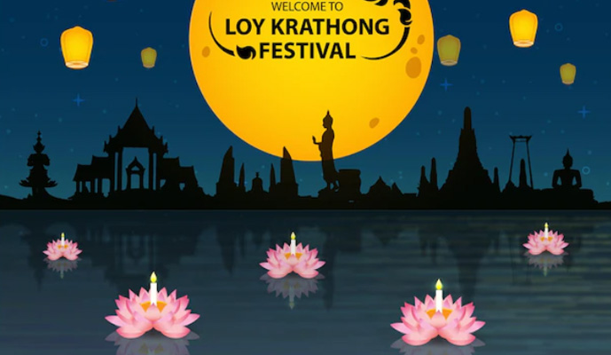
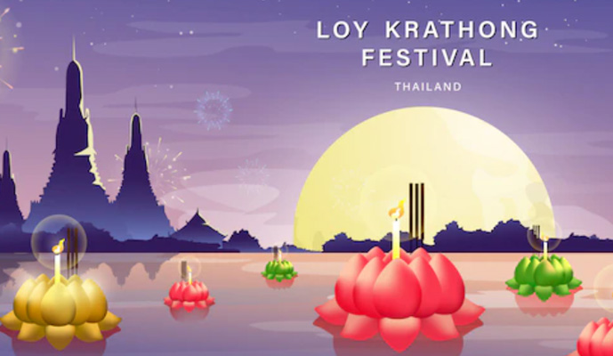

ประวัติ ตำนานและความเชื่อ
ลอยกระทง เป็นพิธีอย่างหนึ่งที่มักจะทำกันในคืนวันเพ็ญ เดือน 12 หรือวันขึ้น 15 ค่ำเดือน 12 อันเป็นวันพระจันทร์เต็มดวง และเป็นช่วงที่น้ำหลากเต็มตลิ่ง โดยจะมีการนำดอกไม้ ธูป เทียนหรือสิ่งของใส่ลงในสิ่งประดิษฐ์รูปต่างๆ ที่ไม่จมน้ำ เช่น กระทง เรือ แพ ดอกบัว ฯลฯ แล้วนำไปลอยตามลำน้ำ โดยมีวัตถุประสงค์ และความเชื่อต่างๆ กัน ในปีนี้ วันลอยกระทง ตรงกับวันที่ 27 พฤศจิกายน 2566
ประเพณีลอยกระทง มิได้มีแต่ในประเทศไทยเท่านั้น ในประเทศจีน อินเดีย เขมร ลาว และพม่า ก็มีการลอยกระทงคล้ายๆ กับบ้านเรา จะต่างกันบ้าง ก็คงเป็นเรื่องรายละเอียด พิธีกรรม และความเชื่อในแต่ละท้องถิ่น แม้แต่ในบ้านเราเอง การลอยกระทง ก็มาจากความเชื่อที่หลากหลายเช่นกัน ซึ่งกลุ่มประชาสัมพันธ์ สำนักงานคณะกรรมการวัฒนธรรมแห่งชาติ กระทรวงวัฒนธรรม
ประเพณีลอยกระทง มิได้มีแต่ในประเทศไทยเท่านั้น ในประเทศจีน อินเดีย เขมร ลาว และพม่า ก็มีการลอยกระทงคล้ายๆ กับบ้านเรา จะต่างกันบ้าง ก็คงเป็นเรื่องรายละเอียด พิธีกรรม และความเชื่อในแต่ละท้องถิ่น แม้แต่ในบ้านเราเอง การลอยกระทง ก็มาจากความเชื่อที่หลากหลายเช่นกัน ซึ่งกลุ่มประชาสัมพันธ์ สำนักงานคณะกรรมการวัฒนธรรมแห่งชาติ กระทรวงวัฒนธรรม

ทำไมถึงลอยกระทง
การลอยกระทง เป็นประเพณีที่มีมาแต่โบราณ แต่ไม่ปรากฏหลักฐานแน่ชัดว่า ปฏิบัติกันมาแต่เมื่อไร เพียงแต่ท้องถิ่นแต่ละแห่ง ก็จะมีจุดประสงค์และความเชื่อในการลอยกระทงแตกต่างกันไป เช่น ในเรื่องเกี่ยวกับพระพุทธศาสนา ก็จะเป็นการบูชาพระเกศแก้วจุฬามณีบนสวรรค์ชั้นดาวดึงส์, เป็นบูชารอยพระพุทธบาท ณ หาดทรายริมฝั่งแม่น้ำนัมมทา ซึ่งปัจจุบันคือแม่น้ำเนรพุททาในอินเดีย หรือต้อนรับพระพุทธเจ้า ในวันเสด็จกลับจากเทวโลก เมื่อครั้งไปโปรดพระพุทธมารดา
การลอยกระทง เป็นประเพณีที่มีมาแต่โบราณ แต่ไม่ปรากฏหลักฐานแน่ชัดว่า ปฏิบัติกันมาแต่เมื่อไร เพียงแต่ท้องถิ่นแต่ละแห่ง ก็จะมีจุดประสงค์และความเชื่อในการลอยกระทงแตกต่างกันไป เช่น ในเรื่องเกี่ยวกับพระพุทธศาสนา ก็จะเป็นการบูชาพระเกศแก้วจุฬามณีบนสวรรค์ชั้นดาวดึงส์, เป็นบูชารอยพระพุทธบาท ณ หาดทรายริมฝั่งแม่น้ำนัมมทา ซึ่งปัจจุบันคือแม่น้ำเนรพุททาในอินเดีย หรือต้อนรับพระพุทธเจ้า ในวันเสด็จกลับจากเทวโลก เมื่อครั้งไปโปรดพระพุทธมารดา

วัตถุประสงค์ของวันลอยกระทง
เพื่อบูชาพระอุปคุตเถระที่บำเพ็ญบริกรรมคาถาในท้องทะเลลึก หรือสะดือทะเล บางแห่งก็ลอยกระทง เพื่อบูชาเทพเจ้าตามความเชื่อของตน บางแห่งก็เพื่อแสดงความขอบคุณพระแม่คงคา ซึ่งเป็นแหล่งน้ำให้มนุษย์ได้ใช้ประโยชน์ต่างๆ รวมทั้งขอขมาที่ได้ทิ้งสิ่งปฏิกูลลงไป ส่วนบางท้องที่ ก็จะทำเพื่อระลึกถึงบรรพบุรุษที่ล่วงลับ หรือเพื่อสะเดาะเคราะห์ ลอยทุกข์โศกโรคภัยต่างๆ และส่วนใหญ่ก็จะอธิษฐานขอสิ่งที่ตนปรารถนาไปด้วย
พระยาอนุมานราชธน ได้สันนิษฐานว่า ต้นเหตุแห่งการลอยกระทง อาจมีมูลฐานเป็นไปได้ว่า การลอยกระทงเป็นคติของชนชาติที่ประกอบกสิกรรม ซึ่งต้องอาศัยน้ำเป็นสำคัญ เมื่อพืชพันธุ์ธัญชาติงอกงามดี และเป็นเวลาที่น้ำเจิ่งนองพอดี ก็ทำกระทงลอยไปตามกระแสน้ำไหล เพื่อขอบคุณแม่คงคา หรือเทพเจ้าที่ประทานน้ำมาให้ความอุดมสมบูรณ์ เหตุนี้ จึงได้ลอยกระทงในฤดูกาลน้ำมาก และเมื่อเสร็จแล้ว จึงเล่นรื่นเริงด้วยความยินดี เท่ากับเป็นการสมโภชการงานที่ได้กระทำว่า ได้ลุล่วงและรอดมาจนเห็นผลแล้ว ท่านว่าการที่ชาวบ้านบอกว่า การลอยกระทงเป็นการขอขมาลาโทษ และขอบคุณต่อแม่คงคา ก็คงมีเค้าในทำนองเดียวกับการที่ชาติต่างๆ แต่ดึกดำบรรพ์ได้แสดงความยินดี ที่พืชผลเก็บเกี่ยวได้ จึงได้นำผลผลิตแรกที่ได้ ไปบูชาเทพเจ้าที่ตนนับถือ เพื่อขอบคุณที่บันดาลให้การเพาะปลูกของตนได้ผลดี รวมทั้งเลี้ยงดูผีที่อดอยาก และการเซ่นสรวงบรรพบุรุษที่ล่วงลับ เสร็จแล้วก็มีการสมโภชเลี้ยงดูกันเอง
ต่อมาเมื่อมนุษย์มีความเจริญแล้ว การวิตกทุกข์ร้อน เรื่องเพาะปลูกว่าจะไม่ได้ผลก็น้อยลงไป แต่ก็ยังทำการบวงสรวง ตามที่เคยทำมาจนเป็นประเพณี เพียงแต่ต่างก็แก้ให้เข้ากับคติลัทธิทางศาสนาที่ตนนับถือ เช่น มีการทำบุญสุนทานเพิ่มขึ้นในทางพุทธศาสนา เป็นต้น แต่ที่สุด ก็คงเหลือแต่การเล่นสนุกสนานรื่นเริงกันเป็นส่วนใหญ่ อย่างไรก็ดี ด้วยเหตุดังกล่าวข้างต้น การลอยกระทงจึงมีอยู่ในชาติต่างๆทั่วไป และการที่ไปลอยน้ำ ก็คงเป็นความรู้สึกทางจิตวิทยา ที่มนุษย์โดยธรรมดา มักจะเอาอะไรทิ้งไปในน้ำให้มันลอยไป
เพื่อบูชาพระอุปคุตเถระที่บำเพ็ญบริกรรมคาถาในท้องทะเลลึก หรือสะดือทะเล บางแห่งก็ลอยกระทง เพื่อบูชาเทพเจ้าตามความเชื่อของตน บางแห่งก็เพื่อแสดงความขอบคุณพระแม่คงคา ซึ่งเป็นแหล่งน้ำให้มนุษย์ได้ใช้ประโยชน์ต่างๆ รวมทั้งขอขมาที่ได้ทิ้งสิ่งปฏิกูลลงไป ส่วนบางท้องที่ ก็จะทำเพื่อระลึกถึงบรรพบุรุษที่ล่วงลับ หรือเพื่อสะเดาะเคราะห์ ลอยทุกข์โศกโรคภัยต่างๆ และส่วนใหญ่ก็จะอธิษฐานขอสิ่งที่ตนปรารถนาไปด้วย
พระยาอนุมานราชธน ได้สันนิษฐานว่า ต้นเหตุแห่งการลอยกระทง อาจมีมูลฐานเป็นไปได้ว่า การลอยกระทงเป็นคติของชนชาติที่ประกอบกสิกรรม ซึ่งต้องอาศัยน้ำเป็นสำคัญ เมื่อพืชพันธุ์ธัญชาติงอกงามดี และเป็นเวลาที่น้ำเจิ่งนองพอดี ก็ทำกระทงลอยไปตามกระแสน้ำไหล เพื่อขอบคุณแม่คงคา หรือเทพเจ้าที่ประทานน้ำมาให้ความอุดมสมบูรณ์ เหตุนี้ จึงได้ลอยกระทงในฤดูกาลน้ำมาก และเมื่อเสร็จแล้ว จึงเล่นรื่นเริงด้วยความยินดี เท่ากับเป็นการสมโภชการงานที่ได้กระทำว่า ได้ลุล่วงและรอดมาจนเห็นผลแล้ว ท่านว่าการที่ชาวบ้านบอกว่า การลอยกระทงเป็นการขอขมาลาโทษ และขอบคุณต่อแม่คงคา ก็คงมีเค้าในทำนองเดียวกับการที่ชาติต่างๆ แต่ดึกดำบรรพ์ได้แสดงความยินดี ที่พืชผลเก็บเกี่ยวได้ จึงได้นำผลผลิตแรกที่ได้ ไปบูชาเทพเจ้าที่ตนนับถือ เพื่อขอบคุณที่บันดาลให้การเพาะปลูกของตนได้ผลดี รวมทั้งเลี้ยงดูผีที่อดอยาก และการเซ่นสรวงบรรพบุรุษที่ล่วงลับ เสร็จแล้วก็มีการสมโภชเลี้ยงดูกันเอง
ต่อมาเมื่อมนุษย์มีความเจริญแล้ว การวิตกทุกข์ร้อน เรื่องเพาะปลูกว่าจะไม่ได้ผลก็น้อยลงไป แต่ก็ยังทำการบวงสรวง ตามที่เคยทำมาจนเป็นประเพณี เพียงแต่ต่างก็แก้ให้เข้ากับคติลัทธิทางศาสนาที่ตนนับถือ เช่น มีการทำบุญสุนทานเพิ่มขึ้นในทางพุทธศาสนา เป็นต้น แต่ที่สุด ก็คงเหลือแต่การเล่นสนุกสนานรื่นเริงกันเป็นส่วนใหญ่ อย่างไรก็ดี ด้วยเหตุดังกล่าวข้างต้น การลอยกระทงจึงมีอยู่ในชาติต่างๆทั่วไป และการที่ไปลอยน้ำ ก็คงเป็นความรู้สึกทางจิตวิทยา ที่มนุษย์โดยธรรมดา มักจะเอาอะไรทิ้งไปในน้ำให้มันลอยไป

ทำไมกระทงส่วนใหญ่เป็นรูปดอกบัว
ในหนังสือตำรับท้าวศรีจุฬาลักษณ์ หรือตำนานนางนพมาศ ซึ่งเป็นพระสนมเอก ของพระมหาธรรมราชาลิไทยหรือพระร่วง แห่งกรุงสุโขทัย ได้กล่าวถึงวันเพ็ญเดือนสิบสองว่า เป็นเวลาเสด็จประพาสลำน้ำ ตามพระราชพิธีในเวลากลางคืน และได้มีรับสั่งให้บรรดาพระสนมนางในทั้งหลาย ตกแต่งกระทงประดับดอกไม้ธูปเทียน นำไปลอยน้ำหน้าพระที่นั่ง ในคราวนั้น ท้าวศรีจุฬาลักษณ์ หรือนางนพมาศพระสนมเอก ก็ได้คิดประดิษฐ์กระทงเป็นรูปดอกบัวกมุทขึ้น ด้วยเห็นว่าเป็นดอกบัวพิเศษ ที่บานในเวลากลางคืนเพียงปีละครั้งในวันดังกล่าว สมควรทำเป็นกระทงแต่งประทีป ลอยไปถวายสักการะรอยพระพุทธบาท ซึ่งเมื่อพระร่วงเจ้าได้ทอดพระเนตรเห็น ก็รับสั่งถามถึงความหมาย นางก็ได้ทูลอธิบายจนเป็นที่พอพระราชหฤทัย พระองค์จึงมีพระราชดำรัสว่า "แต่นี้สืบไปเบื้องหน้าโดยลำดับ กษัตริย์ในสยามประเทศ ถึงกาลกำหนดนักขัตฤกษ์ วันเพ็ญเดือน 12 ให้นำโคมลอยเป็นรูปดอกบัว อุทิศสักการบูชาพระพุทธบาทนัมมทานที ตราบเท่ากัลปาวสาน" ด้วยเหตุนี้ เราจึงเห็นโคมลอยรูปดอกบัวปรากฏมาจนปัจจุบัน
ขอขอบคุณข้อมูลจาก
https://www.sanook.com/campus/910912/
ในหนังสือตำรับท้าวศรีจุฬาลักษณ์ หรือตำนานนางนพมาศ ซึ่งเป็นพระสนมเอก ของพระมหาธรรมราชาลิไทยหรือพระร่วง แห่งกรุงสุโขทัย ได้กล่าวถึงวันเพ็ญเดือนสิบสองว่า เป็นเวลาเสด็จประพาสลำน้ำ ตามพระราชพิธีในเวลากลางคืน และได้มีรับสั่งให้บรรดาพระสนมนางในทั้งหลาย ตกแต่งกระทงประดับดอกไม้ธูปเทียน นำไปลอยน้ำหน้าพระที่นั่ง ในคราวนั้น ท้าวศรีจุฬาลักษณ์ หรือนางนพมาศพระสนมเอก ก็ได้คิดประดิษฐ์กระทงเป็นรูปดอกบัวกมุทขึ้น ด้วยเห็นว่าเป็นดอกบัวพิเศษ ที่บานในเวลากลางคืนเพียงปีละครั้งในวันดังกล่าว สมควรทำเป็นกระทงแต่งประทีป ลอยไปถวายสักการะรอยพระพุทธบาท ซึ่งเมื่อพระร่วงเจ้าได้ทอดพระเนตรเห็น ก็รับสั่งถามถึงความหมาย นางก็ได้ทูลอธิบายจนเป็นที่พอพระราชหฤทัย พระองค์จึงมีพระราชดำรัสว่า "แต่นี้สืบไปเบื้องหน้าโดยลำดับ กษัตริย์ในสยามประเทศ ถึงกาลกำหนดนักขัตฤกษ์ วันเพ็ญเดือน 12 ให้นำโคมลอยเป็นรูปดอกบัว อุทิศสักการบูชาพระพุทธบาทนัมมทานที ตราบเท่ากัลปาวสาน" ด้วยเหตุนี้ เราจึงเห็นโคมลอยรูปดอกบัวปรากฏมาจนปัจจุบัน
ขอขอบคุณข้อมูลจาก
https://www.sanook.com/campus/910912/